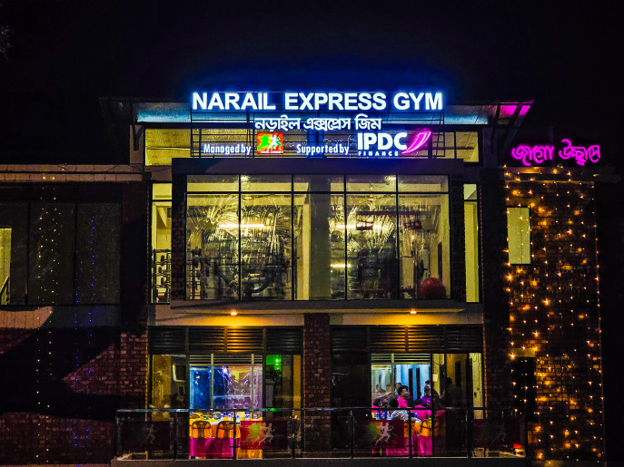

Narail Express Foundation.......!
Narail Express Foundation.......!
The Narail Express Foundation is a Narail-based non-profit charity that provides education, healthcare, and other social services for the people who live in the Narail district of Bangladesh. It was co-founded by Bangladeshi Politician and Cricketer Mashrafe Mortaza, along with Tarikul Islam Anik in 2017. Wikipedia Founded: September 4, 2017 Owner: Mashrafe Mortaza
Mashrafe inaugurates 'Narail Express Gym', built in association with IPDC Finance
The "Narail Express Foundation," in collaboration with IPDC Finance, officially inaugurated the 'Narail Express Gym' at Narail Government High School ground on 9 September 2023.

This gym, equipped with state-of-the-art facilities, embodies the motto 'Shushather Ullashe Jaago Ucchashe'. Mashrafe Bin Mortoza MP, while inaugurating the gym, said, "The importance of the gym's role in developing the skills of athletes cannot be overstated. This gym will enhance the capabilities of athletes and create opportunities for them to represent our country on a national stage. IPDC has been with us on our journey with Narail Express Foundation from the beginning. They have supported us in realizing our vision of constructing a high-quality gym as well. We are thankful to them." Speaking about the contribution of Narail Express Foundation, he further stated, "The Foundation has established a sports academy where athletes receive training in cricket, football, volleyball, and athletics. Everyone may not get the chance to represent the country by joining the national team. But many who have received training here are now playing well in divisional levels and earning to support their respective family. Many are proudly serving in various government forces as players. This has added significant value to the organization's role."

Managing Director and CEO of IPDC, Mominul Islam in his remarks, said, "In Bangladesh, the ongoing progress is being achieved through the efforts of the youth. IPDC believes in the potential of the youth and that is why, as a responsible entity, IPDC has been working closely with Narail Express Foundation from the beginning. The main reason behind our involvement with the foundation's activities is our desire to work alongside the youth's exceptional abilities. We have aligned ourselves with the goals of the Foundation and are determined to make a meaningful impact. We believe that under the capable leadership of Narail Express Foundation, Narail district will produce world-class athletes and shine not only in Narail but on the global stage as well. This collaboration between Narail Express Foundation and IPDC promises to usher in a new era of sports development in Narail and potentially represent the nation on the international stage."